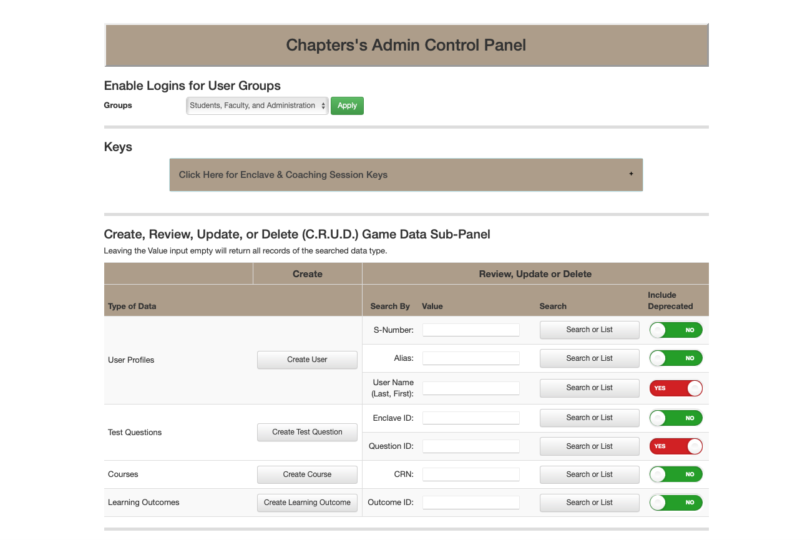
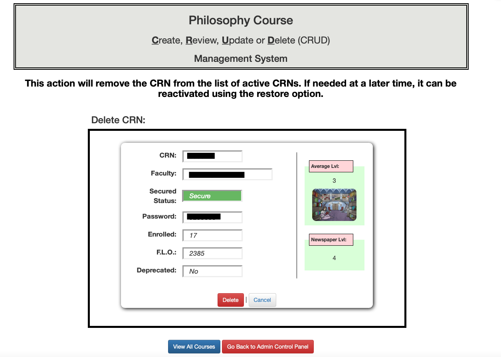
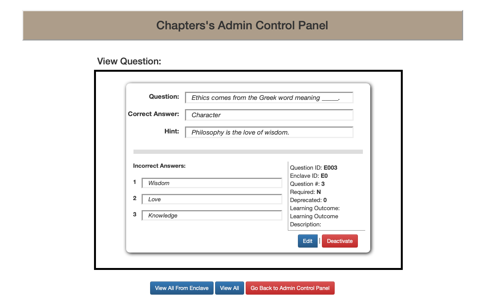
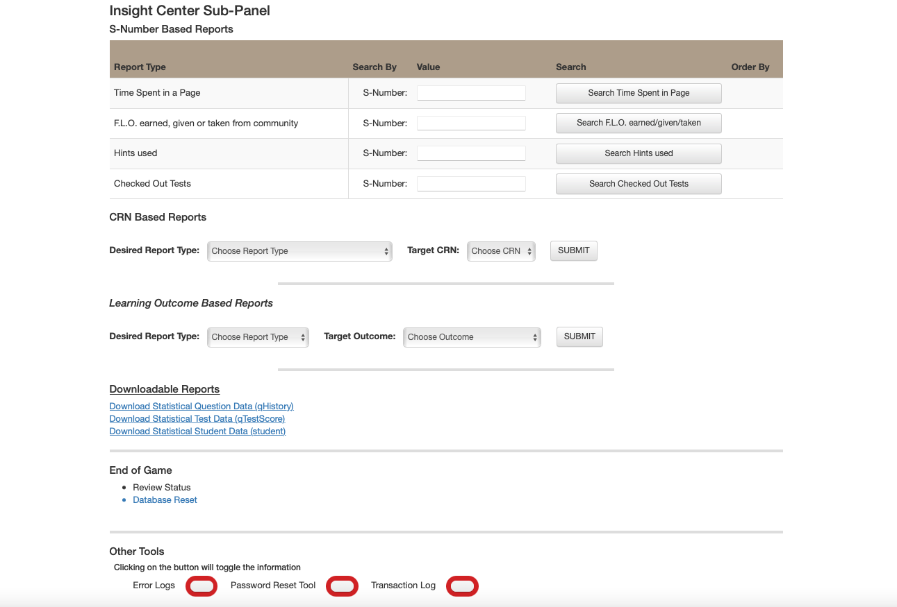
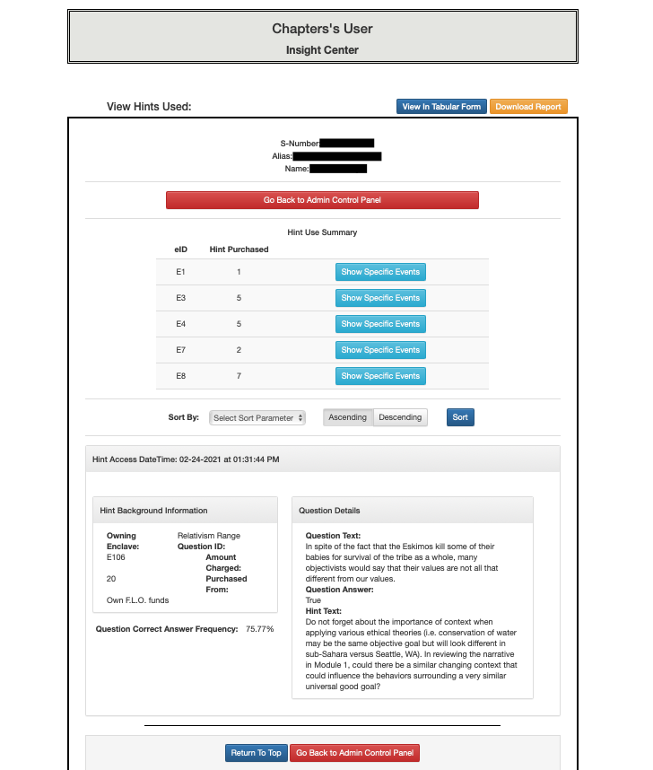
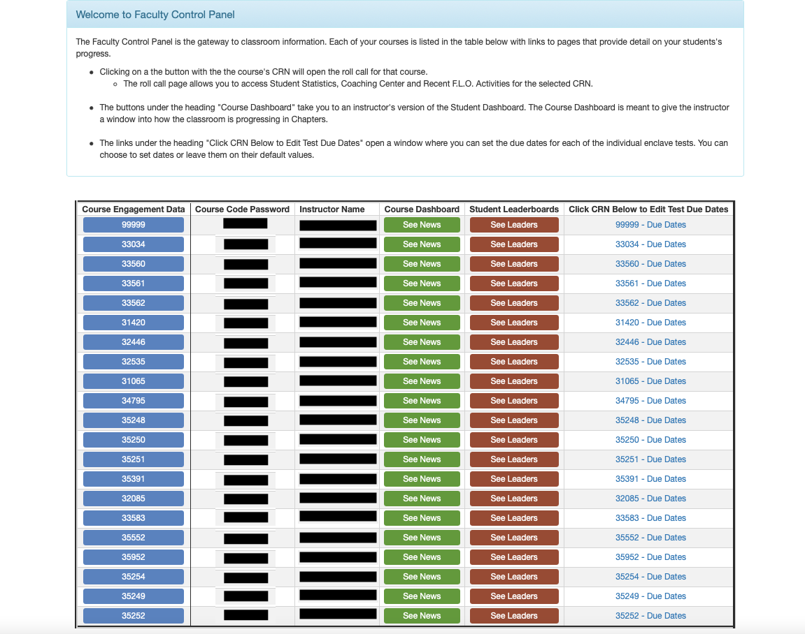
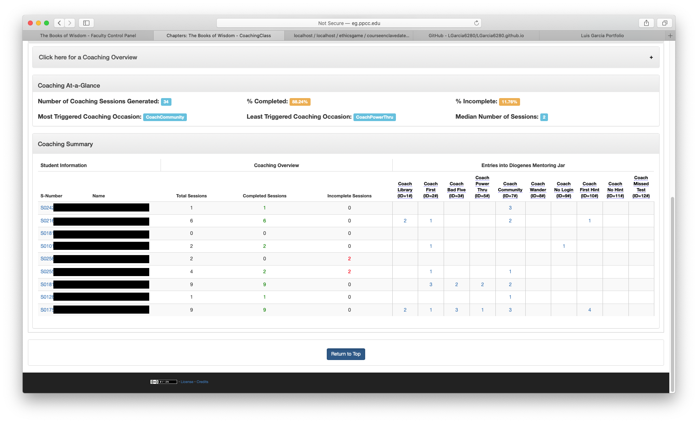
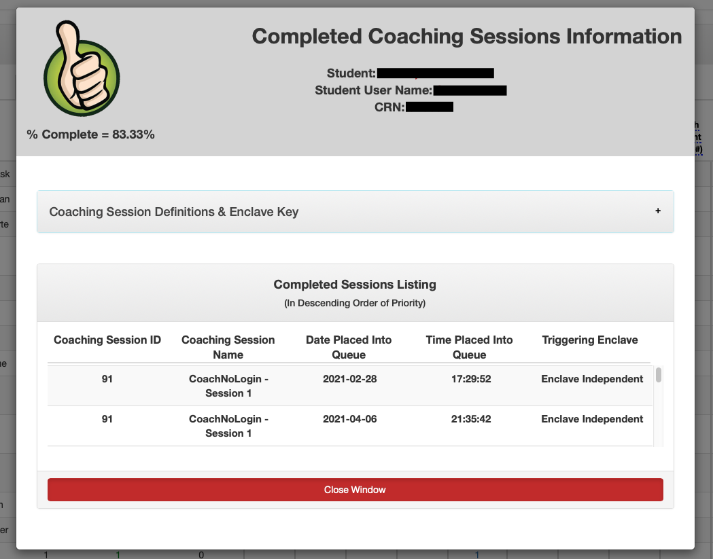
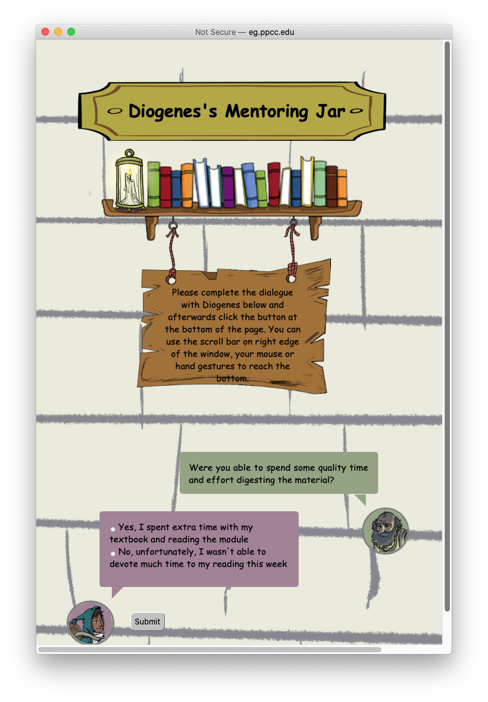

Admin Control Panel Page - CRUD Section
Allows Administrators to perform Create, Review, Update, and Delete operations on a number of different aspects of the data.
Course Delete Page
Page displayed when an Administrator is performing a course delete operation.
Question View Page
Page displayed when an Administrator is performing a question review operation.
User Create Page
Page displayed when an Administrator is performing a user create operation.
Admin Control Panel Page - Insights Section
Allows Administrators to create different reports that provide insight on student and course performance.
Hints Used Page
Sample of a report generated via the Admin Control Panel's Insight Center. This particular report contains a lot of important data that didn't show well in tabular form. Hence, the data is intially displayed in the form shown in this image. However, pressing teh View in Tabular Form button gives the option to display it in such a manner on screen. Moreover, an option to download the data in CSV format is also available. The data can also be sorted based on different paramters.
Faculty Control Panel
Allows faculty to review course performance with different levels of granularity.
Coaching Center Page
This page is accessed via the Faculty Control Panel. It provides a summary of all coaching activity for a specific class.
Coaching Dialogue Page
This page is a summary of a specific student's coaching session completion,
Coaching Dialogue Page
This page shows up whenever a student triggers a coaching session. It's set up to look like a dialogue between the "Coach" and the student.